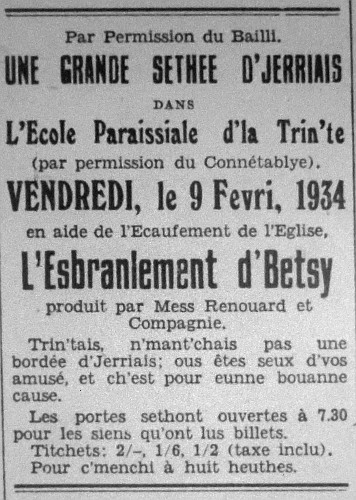

L'Esbranlement de Betsy

PIERRE RONDE
BETSY …………………………… Sa femme
S'TER …………………………… Sa fille
FRANKIE …………………………… Son fils
MERIENNE LESCAUDET …………… Sa nièche
JANNETON DE LOUCHE ………… ... ) Vaisins
ELIZA …………………………... )
NICKLESS LE TEMPYI …………… Le vachi
TOUMAS ……………………………………….
CAPTAINE PERCHARD ……………………….
FRAINQUE DESLANDES …………… Le banchi
FLIP LE HUTCHET …………… Le fermi
ACTE I
Scenery : La tchuisine a Pierre Rondé
Sa femme Betsy est assise auprès du feu a ouvré.
Pierre assis de l'autre coté fume et poque le feu hardi souvent.
Betsy Te v'la equot trejous a pochi, le grais est trejous pien de chendres et j'brulons bein trop de t'cherbon ichin avec toute ta pochsie, n'en v'la desja deux tonniau que j'brulons dans tres mais, chi que tu croi qui s'en va nos maintenin si tu continue de même.
Pierre (pochant tout le temps) Y'etha equot du t'cherbon quand je s'ons mort ma fille et sai tu bin que si tout l'monde en brulaient seulement deux chents de pus tous les mineurs éthaient du travas.
Betsy Ne m'eslourde pas avec ton bavin chi qui ta conté chu gniollin la, et pis r'garde min le grais coume une cotte a couchons, ch'est nettis de matin au sé.
Pierre Te r'vela equot, un houme n'est pas maitre siez li ; et bin, que la S'ter le nettie d'main au matin, ou n'fait rin que d'être a couare les c'mins, chi qu'on cret qui va la maintenin. Je s'ons bin quand ou sa horte de d'sus nos bras.
Betsy T'est bin près a couare ta fille a bas. Mais dit qu ech'te l'dit tu la manque's'as quand ou sa horte.
Pierre Eh bin. J'ethait grand r'gret pour l'houme qui l'etha, ou ne peut faithe rin, tout cha qu'ou pense ch'est d'être a s'proumné en ville au Samedi au sé et être a yiethe toute sorte de gnollin dans l'jour : ne v'la qu'oul a vinch-un an et ou n'sait pas traithe. J'en tet pas d'même dans mon janne temps.
Betsy Faut espethé quand ou s'mathietha que je sa a chiqu'un qu'éthont du bin.
Pierre Ou venne tu voudrais la vais mathiée a chique banchi ou offici a la pieche de la mathié a chique bouan fermi Jerriais ; ma fé un domestique s'est bon assez pour cha qu'ou set faithe.
Betsy bin marrie Eh bin! ou l'est bouanne assez pour un moussieu, une fille qui peux paslé l'anglais et l'françois et joué l'piano coumme yi vaut bin la peine d'avé, même le vet Le Sueur quand y vin dt'senfié la Oakland's Coronation qui s'tet enfiée par avé mangi trop de fielles de navet medit qui n'avait jamais entendu persounne joué coumme yi.
Pierre J'ne pas de peine a l'crethe, le docteu Brown me dit l'autre jour quand y passi par ichin qu'ou tet a joué l'piano et que sa vielle jument qui n'avé pas trotté pour d'jex ans pris le mors es dents et le versi par dessus un lopin d'bannelais et qui li pris deux heuthes a se desbarbouilli d'puté tant qui l'en tet crotté.
Betsy Pas d'autre de ton gnollin, tu set bin qui l'est temps qu'ou trouvent un houmme.
Entre Frankie
tout excitait. Memmée ! Memmée ! Jle cret que ja'i veu la S'ter dans la cache avec un jouanne houmme. Y la t'net par la talle.
Pierre, en s'levant de colethe. Chi que tu nos dit la. Est ti equot là ? Betsy y'ou qu'est man baton.
Betsy J'ten prie assiet té, est'che vi yan que la fille est a s'proumné so un jonne houme qui faut de desmonter d'même ; l'as-tu r'connu Frainkie ?
Frankie Nannin, mais j'cret que j'tet y'un de ches soudards la qui s'ont au fort.
Pierre Quand même j'men vais allé vais si j'peux les trouvé, doune min mon baton Frankie.
Betsy Assiet té pouarre vier Amice.
(Pierre sort tout marri).
Betsy Pouarre petit bête de t'en v'nin dithe des contes sus ta sœur, la preschaine fais que tuf'sas chounna j'té dounné la pus grand s'lingise que j'ten touanne la tête de bord. Va t'en te couachi p'tit d'jeux, n'ou vet bin que tu chin de ton pethe.
(Entre la nieche, Merienne Lescaudet)
Betsy Ou ch'est té Merienne, as-tu veu S'ter ?
Merienne Nenin, ma tante.
Betsy Ch'est que Frankie ma dit qui la veu a paslé a chique mastin dans la cache.
Merienne Eh l'pouarre bête, j'tet min qui tet a paslé au vachi.
Betsy Mais coumment que chounna s'fet qui l'avait son bras a l'antout de la talle ?
Merienne Eh bin n'en r'vella y'une qui va toute seule et pis j'voudrais vais un vachi mettre son bras a l'entout de ma talle.
Frankie (entrant dans sa k'mensolle) Memmée, Memmée, vetent vais si j'ai dit des menties. J'té dit que la S'ter est dans la cache avec un houmme, et y vint de l'embrachi.
Betsy (toute marrie) Si tu n'est pas au yet dans un minute j'te quiamusé p'tit conte pette
(y sen va)
(Entre S'ter)
Betsy De y'ou que tu r'vins, tu set bin que t'en pethe ne veux pas que tu s'est a couarre les c'mins si tard au sé.
S'ter Ecoute memmée. J'ai vingt ch'un an et si tu cret que peppée s'en va m'empeschi de m'proumné au sé tu trompe bin. Après tout, je n'sis pas un ave, dit min memmée, étaient tous miyeurs quand ou t'êtes jannes.
Pierre entre Oh vos vla y'ou qu'ou v'nez de couarre.
S'ter Ch'est d'mes affaithes you q'j'était. Après tout, si une fille de vingt ch'un an n'est pas allouée de faithe cha qu'ou veux y vaut mus s'hallé tout a fait. Je vait que siez les autres filles lus pathents font d'lus mus pour amusé lus esfants, ichin ch'est travailli niet et jour et avec chounna ou n'faites que d'grondre amaintchi du temps.
Pierre Escoute ma fille, tu pasle de t'naller d'ichin et ch'est que tu cret que tu f'sais.
Merienne Tu set m'nonque S'ter a raison, tu pourrais faithe piethe que d'nous dounnée un mio d'amusement pus souvent, pour chi qu'on n'avez pas une bordée d'nier beurre pour un r'change ?
Pierre Et pouarre sotte, chi q'tu cret qui s'en va acaté des poummes pour faithe du nier beurre et j'sis bin binseux que ta tante n'en voudrait pas l'embaras.
Betsy Pour chounna y men est pas d'rin. Ch'est a dithe y faudra que les filles invite lus amins pour nos aidji a p'lé les poummes.
Pierre Eh bin r'gardez si ou voulez faithe de votre mus sus la ferme ou pouvez en faithe une paislée d'anniet en t'chinze, mais j'un veux pas vais trop d'jeunes gailliards ichin.
S'ter et Merienne empouannent Pierre et le dance alantou d'la t'chuisine enchantant j'tet la prumièthe chose le matin.
Betsy N'en v'la assez, allez vos coauchi.
Fin d'Acte y'une
___________
ACTE II
La même pièche
Eliza Mais Betsy, tu mestounne, chi qui fait que tu t'en vas faithe du nier beurre, tu m'avais dit que jamais tu n'en l'sais d'autre après la bordée qu'ou eûtes tant d'embarras et que ton pouarre frethe F'lip faillit d'perdre la veux par un éclat.
Betsy Eh bin tu set les filles en n'ont voulu y'unne et pis il est grand temps que la S'ter se mathyie, la v'la chi passe vingt ch'un an et j'nen s'est pas ravie que y'ethait chique s'uns souantre yi.
Janneton Li dounnonus auchun.
Eliza Eh bin y'a le jonne F'lip Le Huchet, le fils a John Le Huchet de la ferme du Coin.
Betsy Eh bin oui, j'voudrais j'tina pour ma fille.
Eliza Pourtant ne v'la un garçon qui sa bin, ch'est le seule esfant ; son pethe a chiquante vregies de terre, très maisons et le r'venu de chinquante quartiers de froment, trente cabots de chendre d'vret.
Betsy Eh bin ch'est que ch'la li vaudra quand j'allons betot être taxes pardessus les outhelles pour payi la contribution infernale a ch'est angyais la.
Eliza Contribution Imperial tu veux dithe Betsy.
Betsy Nouffait, Contribution generale, ch'té dit.
Janneton Mais quand même il etha un bouan mio d'herpin quand le bouan houmme packsa ses velles.
Betsy Je n'veux rin d'li et pit Frankie nos a dit qui l'a veu S'ter de temps en temps dans la routte a s'proumne avec chique soudard. My Good ! si j'pouvait être un offici, un general ou un corporal. Estche que t'une cret pas que v'la chi pathaitreté mus que d'mathié un commun fermi. Chi biauté que tu vet dans Flip Le Huchet, l'fermi avec touas ses sous.
Janneton Pourtant ch'est un charmant corps et y'en a pas y'un a lis montre a traithe et a cachi y'a pas son pathé.
Eliza Mais chi jeunes houmes que tu'ouas invitet pour plé ?
Betsy Ma pouarre fille j'n'y counnais rin. Ch'est les deux filles chi n'ont prins soign, mais sans lus dithe j'ai invité Moussieu Frainque Deslandes le banchi et Captaine Perchard, ch'est qu'ten cret Janneton ?
Janneton J'cret qu't'est a faithe une bête de té même, est che que tu cret que des gens coume chounna s'en vont mathié une fille de fermi ; peut ele sement pasle l'Angyais ?
Betsy Eh pourchi qu'ine mathiethait pas une fille de fermi, chi que tu ouas a dithe contre les fermiers ?
Eliza Mais te même tu vins d'nos dithe que t'une veux pas qu'ou mathyie un fermi.
Nickles (entrant dans ses chabots et sa blouse) Missis, chi poumes qui vos faut ?
Betsy Ou pouez pas tapé d'vant entré, pouarre bachouard et j'vos ai trejous dit de rev'nin pas dans la bouane chuisine avec vos chabots.
Nickles Eh bin ! y n'vos en manquent pas d'orgi. Ou n'êtes pas d'même au matin quand ou vos l'vez.
Betsy Tais ous insolent qu'on êtes.
Pierre entre Eh bin ! tout chu tint a mare la est y q'menchi, ou n'avez pas sement d'poumes de ramassés, chi que chu grand babin est a faithe ichin ?
Nickles Justement j'lis d'mandais chi poumes qui fallait, mais ou ne set pas.
Pierre Y'en a deux quarchers de roumci dans l'bel que j'avais mins d'coté, et tres bathis de Blenheims, mais ch'est pour la maison, n'y touche pas.
Nickles Mais d'jantre, j'ai etempés j't'arlevée.
Pierre Grand Achocre !
tu n'as pas pus d'idée qu'un mousse qui vin d'naître, chi jamais qu'a entendu d'etempé des poumes de garde, et min qui n'avait promins tres cabots au recteur a la pieche de payi la djaime des poumes ; achteu j'men vait être obliyi de débourré, fiche min l'cant et ramasse chez poumes de roumsi la.
Nickles Chez poumes la ne valent pas grand-chose pour faithe du nier beurre, il on té toutes ramassés sus la terre et j'cret bin qui sont toutes pienes de vers.
Pierre Chi qui chounna peut faithe, tan pus de vers tant pus gras que sa le nier beurre ; marche les cherchi et dit a Toumas de t'aidji. A chi l'heuthe que tu attend la compagnie Betsy ?
Betsy J'les attends a toute minute, écoute
: une tape a la porte. Moussie Deslandes le banchi entre.
Betsy Coument qu'ou êtes Moussie Deslandes ?
Ou l'introduise es autres.
Banchi Pas tant piethè Mrs Rondé. J'mé r'fais justement d'une fiere bordée d'goute.
Janneton Voulons dithe par le nez moussieu ?
Banchi Nannin, est ch'qu'oune savez pas chi que ch'est que la goutte.
Eliza Oui, oui, ou se bin chi qu'est que la goutte, parce qu'ou la veu Betsy snoffé tant fais et le nez fait que d'lis couarre quand ou fait chutte game la.
Merienne Ou devthaient avé honte de paslé d'une telle moniethe de ma tante ; mais dites min Moussieu Deslandes, y'a ti auchune chose de nouvé en ville.
Banchi Oui, j'allons frumé la s'maine chi vain. Achteu que j'allons être pyumés par chez Angyais avec la contribution Imperial y ne f'sat betot nu dans l'isle.
Nickles et Thoumas entre avec un hamper de poumes de Rouget
Nickles Ne f'chin vos poumes, y'en a ti assez ?
Pierre Main nannin,
(y va vais les poummes). Oh deux lanternes ! Jamais d'ma vie j'ne veu deux bachouards coume vous, est y possiblye et permins qui faut que je s'ais baté avec deux pathelles achocres coume vous.
Toumas Mais chi qu'ou avez a nos paslé d'meme.
Pierre Ch'est que j'ai m'apporté des poumes de Rouget pour faithe du nier beurre, min qui les avait chiyis pour l'hivé.
Toumas Ecoutez messe, chn'est pas d'ma faute si ch'est qu'ou enviez un tel bigot a ramassé des poumes. Ch'nest pon min qu'est responsable. Je fait coume y ma dit.
Nickles Ah, sorte de Ste. Nitouche. J'voulais apporté des Grises Ernettes et ch'est té qu'a choisi ch'est ichin.
Toumas N'en 'vla ti un autre ; et vous-même ou m'avez apporté nimporte chi, le vi n'en setha pas la diffethence, y n'y vet pas après siez heuthes.
S'tre entre Mais memmée ou n'êtes pas ocquo a plé. Jamais j'ne sons près pour demain.
Merienne Chez grand bêtes la vennent d'apporté des poumes de tabye.
S'ter Vet-an Nick. J'allons allé les ramasser.
Toumas Ch'est des Nick assaisé, chi que ch'sa d'min quand y sont a moué.
Captanne Perchard entre Good evening Mrs Rondel, how are you ? So good of you to ask me to come.
Betsy Ah Cap'tanne Perchard, I am quite good, mais ma fille will be ichin dans une minute.
Toumas Y'ne sait l'Jerriais, pourtant y' pouvé bin l'paslé quand je jouimes ensembye coumes mousses; coumment qu'il est v'nu à être Captanne. J'nen set rin. Y'avait pas pus bête coumme mousse.
Pierre Tais ous et n'paslez pas tant.
S'ter et Nick rentre avec les bouannes poummes.
Betsy S'ter vetan dithe bon soir a Captanne Perchard.
S'ter Coument ou êtes Captanne ?
Captanne Perchard Je sis allright, and you ?
S'ter Avous oublié votre Jerriais, Captanne?
Captanne J'le paslons pas often you know.
F'lip Le Huchet entre Bon soir toute la compagnie. J'vet qu'ou n'êtes pas q'menchi.
Merienne Eh bin F'lip, allous exhibité au Show d'l'isle ?
F'lip Oui, j'fimes si bin au show des tres paraisses que j'allons resprouvé en ville. J'umes tres prumiers et deux deuxièmes et j'en ethimes y'eu d'autres si les Juges avaient veu quié ; et j'ai vendu deux j'niches pour Améthique j'tarlevée, la Gladiola's Ginger Snap et la Hyacinth's Daisy Bell.
CHANSON
Pierre Allons mes amins y l'est temps de q'menchi a plé.
Captanne Perchard N'en v'la une farce a nos joué. Si j'avais seu que j'tet pour plé des poumes j'ne s'est pas v'nu et chi qu'on criiez Moussieu Deslandes ?
Moussieu Deslandes Mon pouarre garçon, fos pas être si r'gardant, vet an. J'allons lus dounné un coup de main.
Toumas Oh bon, y la r'trouvé son Jerriais. Vous Moussieu l'Captanne ou m'faites penser a ch'tina qu'avet té jusqu'à la Corbiethe ....
Betsy S'ter, demain au matin y faudra que t'ou alle en ville avec Nickless cherchi les limons et les epices ; au même temps ou pourrais apporte la paile.
CHANSON SI POSSIBYE
Fin d'Acte II
____________
ACTE III
CHANSON : Vive la Compagnie
Scene : La même
Quatre houmes sont a joué a dominoes, tres femmes sont a prepathé des bros pour le nier beurre. S'ter et l'Captanne sont a moué.
Betsy As tu r'gardé Pierre s'il est betôt fait ?
Pierre Ramasse mé une chuyi et une assiette et j'men vais vos l'dithe dans une minute.
Y prend l'assiette et s'en va a la paile.
Nick Souffye ti boss. N'on ma trejous dit que quand y souffye Home Sweet Home il est a peu près fait.
Toumas Ah tait ta vervette, pouare nigot ch'est qu'tu counnais a faithe du nier beurre ? Chantez nous une chanson, vous Janneton.
Janneton Mais ma fé nannin, demade ichin a Liza ou n'en sait des bouanes.
Toumas J'en veux pas entendre de ses chansons. La derniethe fais qu'ou chanti touas les cats du vaisiné moithient de peux.
Eliza Affronté qu'ou êtes. J'conte que ma voia vaut la votre auchun temps : mais vous Maitre Pierre ou pouves bin chanter.
Pierre Eh bin. J'veux bin. N'en f'chin y'une des viers Terreneuviers.
(Y chante ''Bouan Vent'')
F'lip Ch'n'est pal mal chantet, mais ou qu'menchi a avet la voix crachie Mess Rondé.
Pierre Ch'est sem un ame pus qu'oune pouez en faithe F'lip Le Hutchet.
Eliza a Betsy S'ter pathaient accordé bin avec le Captanne. J'ne sais pas estounnet que je set acquo un match entre yeux.
Deslandes Le Captanne et S'ter paithaissent lassés. Si ou voulez Merienne j'allons moué a lus pieche.
Merienne Mais en êtes ou capabye Moussieu Deslandes. Ch'n'est pas une piyume ou savez.
Deslandes Oh ma fille ! Je remoué du nier beurre quand tu tes haute comme un pot d'cidre.
Merienne Eh bin. J'allons vais.
Captanne Tout essoufye, n'en v'la ti une vielle bordée, v'la qui vos fait du bin d's'asiethe.
F'lip V'la chi vos f'sa du bin de travailli, ch'est un 'rnouvé pour vous de faithe un mio de travas et pis v'la chi vos d'valla la graisse.
Toumas Ah tu peux l'dithe men F'lip ; v'la chi n'fait rin d'autre que de s'proumné a ch'va tant'chi que les pouare soudards marche driethe.
S'ter Est tu memmée que tu'ouas assez d'pots pour le nier beurre, tu f'sais mus de t'en faithe seux devant qui sé trop tard.
Betsy sort.
S'ter Moussieu Deslandes ou pathaissez lassé. Nickless s'ent va prendre votre pieche avec Janneton.
Deslandes Eh bin ! ma fille, ch'n'est pas tante piethe pour y'un qui moignie qu'une piyume.
Pierre r'gouate le nier beurre et dit que dans d'jez minutes ysa prêt a d's'cendre.
Betsy J'crains que j'allons être a court de pots. Peux tu m'en prété une coupye de douzaines Eliza ?
Liza Oui, mais chi qu' itha les cherchi ?
Betsy S'ter peux y allé.
S'ter J'ithai bin mais pas toute seule, y fait niet et nou n'is vet chinne terre.
Liza Eh bin que F'lip alle avec li, y'n sont pas longtemps.
Betsy Mais nannin ja ! y n'y'itha pas, que Nickless y alle.Y'n ne sont pas longtemps.
(Y s'en vont et Toumas prend la pieche a Nickless)
F'lip tout marri Oh, j'che bin que j'en sis pas bon assez pour allé avec votre fille, pourchi qu'ou m'avez invité a v'nin ichin assaisé, ou n'avez pas besoin de vos penser si grande. En m'en v'nant j'ai rencontré votre frethe et la route tet a peine grande assez pour li ; en avait ti une chasse.
Betsy N'en v'la ti d'l'affront et dans ma maison.
Pierre Ne l'escoute pas F'lip, vet en continué notre game de dominoes. J'navons sement que deux ou tres minutes achteu ; a chi la pose ?
Janneton a Betsy Sont ti a faithe les pots. Y sont bin longtemps.
Betsy Doune lu une chance.Y'a pas d'temps perdu. Y'a equot une bouanne trotte j'usque siez té. Ah les f'chin.
Nick entre en casaque a d'cheux d'pie et bill toppeur et une grande fleur dans sa boutonniethe. S'ter en grand voielle et un grand boutchet d'fleurs.
Betsy Mais mon doux chi q'chounna veux dithe, nous dithé qu'on vedraient de vos mathié.
Nickles Mesdames et Messieurs, permettez que j'vos introduise a ma blonde.
S'ter Est che demaime que tu pasle de ta femme ?
Betsy Mais chi qu'ou voulez dithe, est ous riellement mathiée.
Nickless Tu las d'vinné Memmée. J'avons té mathiés au r'gistre a matin quand j'avous té ramassé les epices.
Betsy Ah mon doux ;
ou s'aisvonie l'amaintchi.
Pierre L'Achocre, il a ma bouanne cassaque et mon bill toppeur ! y'n y'en manque pas d'affront ; mais enfin d'pis que ch'est d'même et que nos f'chin bétôt a noué, qui prennent la ferme et j'nos r'tithons et j'sis in content de vais ma fille mathiée a y'un qui f'sat un bouan fermi.
F'lip a Betsy Vos v'la n'nez dans l'puté achteu Missis, le fils d'un fermi n'tet pas bon assez pour votre fille, ou mithaient bin haut y vau fallait un offici ou un banchi, mais vos v'la la belle methe d'un vachi.
Pierre Eh bin m's'amins, ch'n'est pas tout chounna. J'lus souhaite toute joie et prospethité.
Viyiz étout: